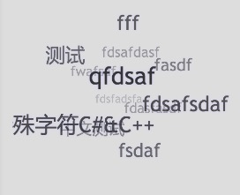

Yet, just another tag cloud plugin for hexo.

And you can see online live demo by clicking here
"hexo-tag-cloud": "2.0.*" to package.jsonhexo/themes/landscape/layout/_widget/tagcloud.ejs file and insert the following code.<% if (site.tags.length) { %>
<script type="text/javascript" charset="utf-8" src="/js/tagcloud.js"></script>
<script type="text/javascript" charset="utf-8" src="/js/tagcanvas.js"></script>
<div class="widget-wrap">
<h3 class="widget-title"><%= __('tagcloud') %></h3>
<div id="myCanvasContainer" class="widget tagcloud">
<canvas width="250" height="250" id="resCanvas" style="width=100%">
<%- tagcloud() %>
</canvas>
</div>
</div>
<% } %>
next/layout/_macro/sidebar.swig.{% if site.tags.length > 1 %}
<script type="text/javascript" charset="utf-8" src="/js/tagcloud.js"></script>
<script type="text/javascript" charset="utf-8" src="/js/tagcanvas.js"></script>
<div class="widget-wrap">
<h3 class="widget-title">Tag Cloud</h3>
<div id="myCanvasContainer" class="widget tagcloud">
<canvas width="250" height="250" id="resCanvas" style="width=100%">
{{ list_tags() }}
</canvas>
</div>
</div>
{% endif %}
apollo/layout/archive.jade....
block container
include mixins/post
.archive
h2(class='archive-year')= 'Tag Cloud'
script(type='text/javascript', charset='utf-8', src='/oj-code/js/tagcloud.js')
script(type='text/javascript', charset='utf-8', src='/oj-code/js/tagcanvas.js')
#myCanvasContainer.widget.tagcloud(align='center')
canvas#resCanvas(width='500', height='500', style='width=100%')
!=tagcloud()
!=tagcloud()
+postList()
...
hexo clean && hexo g && hexo s to see the change. hexo clean must be done before use hexo g.hexo g -d or hexo d -g, @See Issue 7Now the hexo-tag-cloud plugin support customize feature. It’s simple to change the color and the font for the tag cloud.
# hexo-tag-cloud
tag_cloud:
textFont: Trebuchet MS, Helvetica
textColour: \#333
textHeight: 25
outlineColour: \#E2E1D1
hexo clean && hexo g && hexo s to enjoy your different tag cloudSubmit issue please
See Todo.md